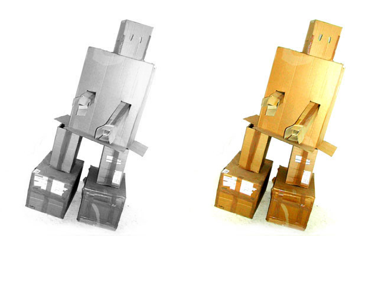

| Name |
restore() |
| Examples |
import hypermedia.video.*;
OpenCV opencv;
size( 640, 480 );
opencv = new OpenCV(this);
opencv.loadImage( "hypermedia_robot.jpg" );
opencv.convert( OpenCV.GRAY ); // convert to gray
image( opencv.image(), 0, 0 ); // display the result
opencv.restore(); // revert to RGB
image( opencv.image(), 320, 0 ); // display the result
|
| Description |
Revert to the original image.
By default returns to RGB image, or GRAY (if specified). |
| Syntax |
restore();
restore(type);
|
| Parameters |
| type |
int : the target color space : RGB or GRAY |
|
| Return |
None |
| Usage |
Application |
| Related |
blobs()
|